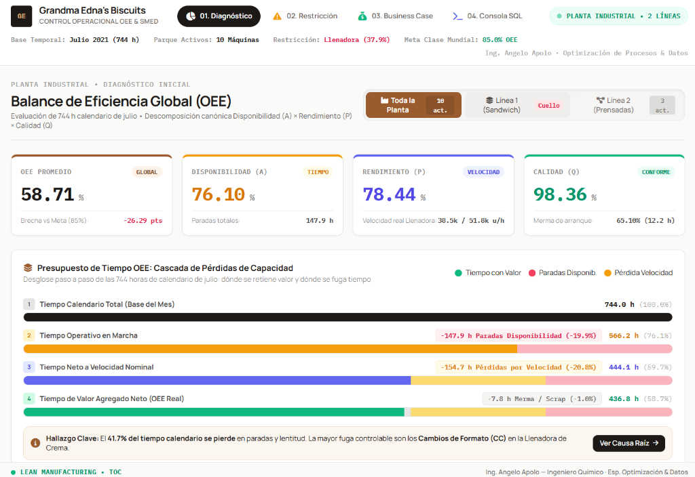
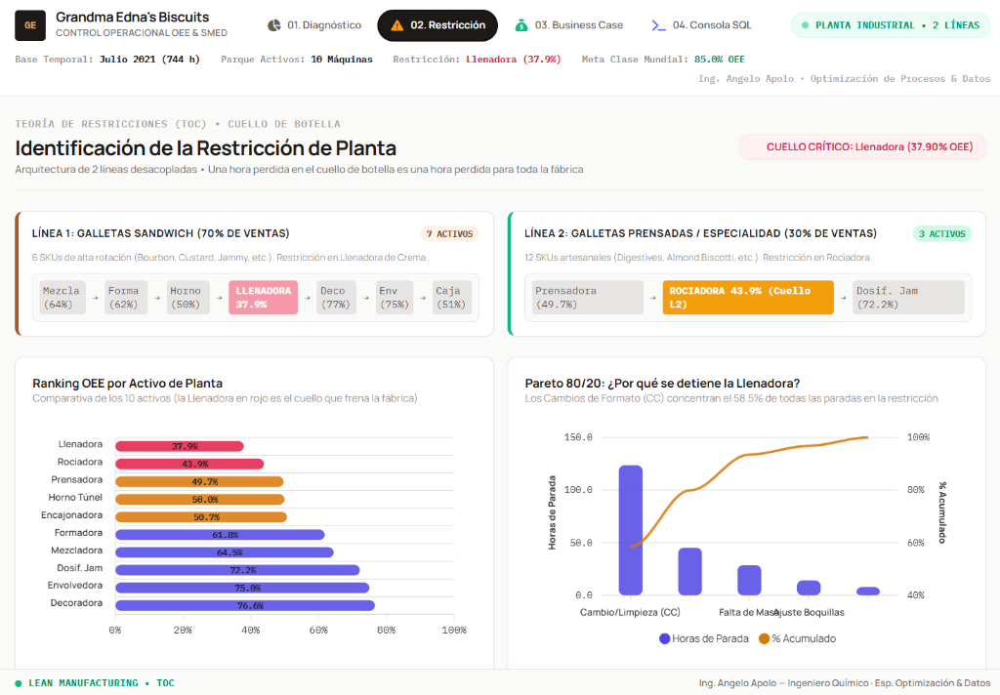
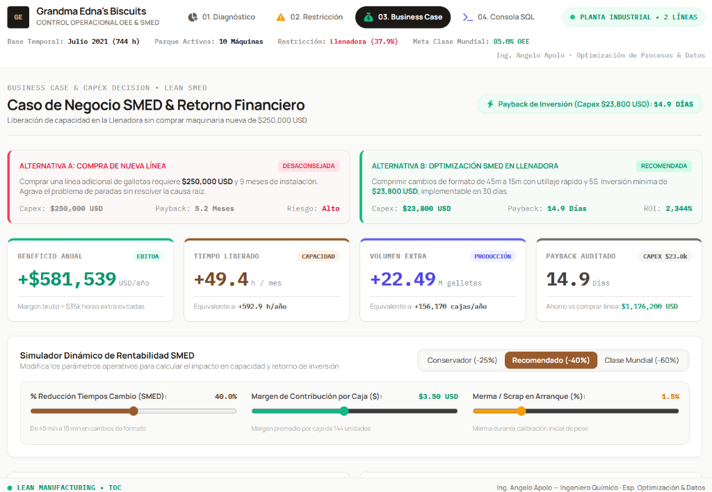

Resumen Ejecutivo de Negocio
Este proyecto demuestra cómo recuperar capacidad instalada oculta sin incurrir en compras innecesarias de maquinaria (Capex cero). Mediante el análisis de 8,044 eventos operativos en Python y DuckDB In-Memory, se descompuso el OEE de la fábrica (58.21% vs 85.0% meta mundial) y se identificó que la Llenadora de Galletas (`Biscuit Filling Machine`) frena el 70% de la facturación con un OEE de apenas 37.90%. Al aplicar la metodología Lean SMED, se estandarizó el cambio de formato de 45 min a 15 min (-66.7%), liberando +49.4 h/mes y generando un caso de negocio de +$581,391 USD anuales con un Payback de 14.9 días frente al Capex evitado de $250,000 USD de comprar una máquina nueva.
1. Diagnóstico Canónico del OEE & Árbol de Pérdidas
Siguiendo la norma ANSI/ISA-95, se modelaron matemáticamente los 3 componentes del OEE sobre 744 horas de planta:
Tiempo en Marcha / Tiempo Planificado. 147.9 h de paradas en el mes gobernadas por cambios de producto (CC) y averías mecánicas.
Producción Real / Capacidad Nominal. Velocidad observada en la restricción: 38,506 u/h vs diseño de 51,840 u/h (-25.7%).
Galletas Conformes / Total Producido. 458.3 M unidades vendibles con merma controlada en 1.76%.

2. Identificación de la Restricción (Teoría de Restricciones - TOC)
El análisis de datos demostró que la fábrica no es una sola línea lineal, sino dos líneas totalmente desacopladas:
El Diagrama de Pareto 80/20 sobre la Llenadora reveló que acumula 123.5 horas de parada en Cambios de Formato y Limpieza (CC) al mes (1,957 eventos, 58.5% de su tiempo detenido). Cualquier mejora fuera de esta máquina es un espejismo; optimizar la Llenadora eleva la capacidad de toda la fábrica.

3. Plan de Reducción SMED & Cronograma Hombre-Máquina
- Desacople Externo (5S): Kitting previo de herramientas, precalentamiento de crema a 30°C y revisión de receta mientras la máquina aún produce el lote anterior (-12 min).
- Cabezal Gemelo Prelavado & Poka-Yoke: Reemplazo del bloque de boquillas mediante abrazaderas Tri-Clamp de 1/4 de vuelta y galgas fijas sin llaves ajustables (-10 min).
- Validación Microbiológica ATP Digital en Paralelo: Test de hisopo digital al minuto 12 con luminómetro EnSURE Touch (< 30 RLU) sin esperar parada de línea (-8 min).
4. Caso de Negocio Defendible: SMED vs Compra de Maquinaria
| Variable Evaluada | Alternativa Tradicional (Capex Mayor) | Propuesta Lean SMED (Angelo Apolo) |
|---|---|---|
| Estrategia | Comprar 1 Llenadora nueva | Estandarización SMED + Cabezal Gemelo |
| Inversión Inicial | $250,000 USD | $23,800 USD (Capex menor) |
| Tiempo de Implementación | 6 a 9 meses | 8 Semanas (Gantt A3) |
| Beneficio Anual Generado | +$581,000 USD / año | +$581,391 USD / año |
| Período de Retorno (Payback) | 5.2 Meses | 14.9 Días |
| Ahorro Neto de Capital | $0 | $226,200 USD Ahorrados |

5. Entregables Técnicos & Repositorio
Desarrollado en Python (FastAPI) y DuckDB In-Memory con 4 vistas operativas: Diagnóstico OEE, Restricción, Simulador What-If y Consola SQL nativa (< 3 ms).
Matriz SMED en Excel (4 hojas con AMFE de riesgos), Justificación Financiera para Directorio y Reporte A3 oficial metodología Toyota.